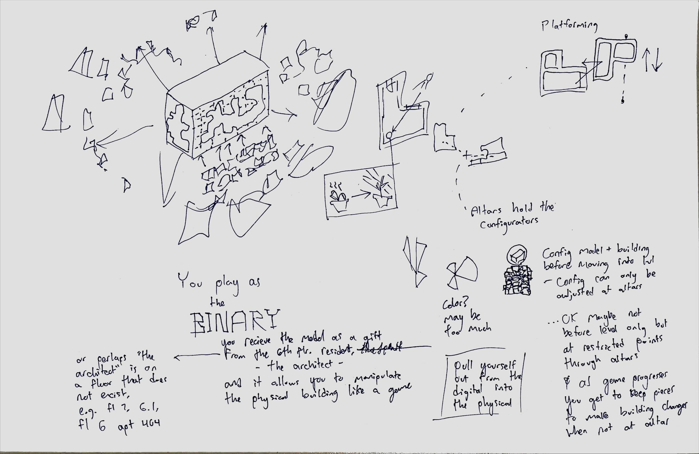
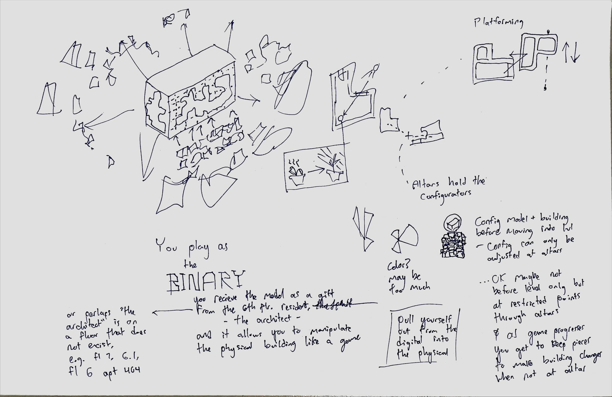

The Grid Unknown
Situated in the Destination-Journey Apartments (DJ-A) architecture, "The Grid Unknown" is a singleplayer VR puzzle game which magnifies the phenomena of scaled architectural models as forms of imaginative representation for full-sized building architecture. It positions the player as The Binary - a floor two resident of the apartment building who is an avid virtual reality (VR) gamer and content streamer - who is gifted a miniature physical model of the DJ-A by the elusive, self-proclaimed "architect" of the building who is on floor 6.1. As The Binary interfaces the model, starting to pull its clusters apart and rotate, transpose, and reconfigure its assembly, the Binary's unit is swept into a tornado-like chaos with the full-sized DJ-A tearing apart and reconfiguring itself in its entirety to match the assembly prescribed by the building model. The Binary awakes in a disarrayed, physics-defying DJ-A - clusters of the model lost and strayed across it - with a mind set to regaining those missing so that they may recognifure the building back to its original state and find reasons to the architect's intents.
Personal Project / May 2024 - Not Yet Released


 
